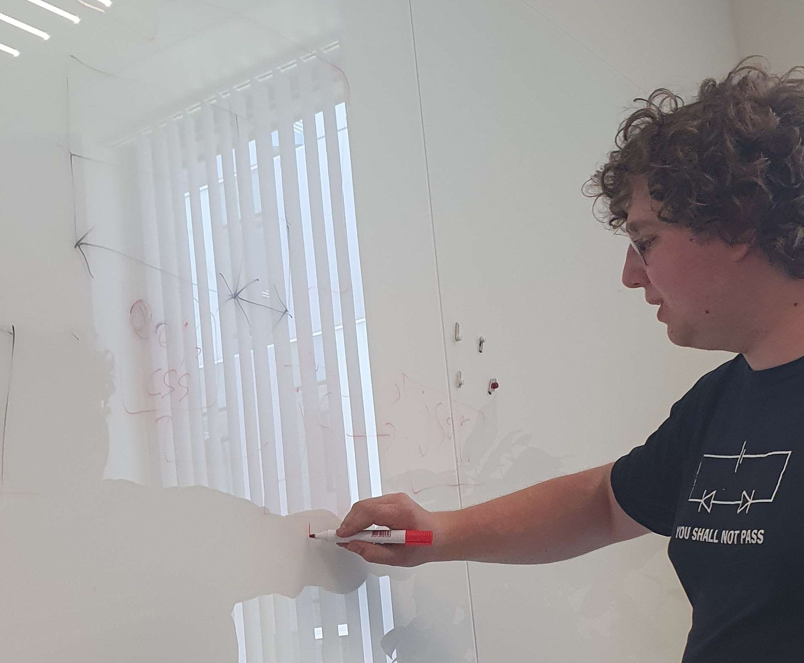

Introduction
Welcome to the Project page of our website!
Chapter 1: What is it that we have made?
We have made a website that converts the temperature of the PYNQ into a graph! This website also has all the information about us, it took a long time and a lot of hard work to get this website to the stage that it is. On this part of our website, you can find how we worked together on this project, who did what and how it all went. Clicking on this you can go to our About page this shows our contact information in case you would like to know more about us and the website. On the Live Data side, you can find a graph representing our way of turning the data into a graph. And finally, there is the Home page in case you just wanted to admire our youtube stream of the PYNQ can be viewed.
Chapter 2: How did the teamwork go and how did it go?
Our teamwork was pretty good, each one of us was given a part of the point document to work on. It was shared as follows:
✔ Frontend
✔ Operations
✔ Security
✔ Teamwork
✔ Github
Our teamwork was pretty good each one of us put in their best effort to make it work out we communicated as much as we could but sadly we did not completely make it.
Presentation Return to Introduction
The team but also Dries is there too
Chapter 3: Q&A and demonstration time!
Sources: W3schools to learn everything about our codes, video's from Bryan and much more!
Let's get to the graphs, shall we? Click me please :D! or return to Introduction.